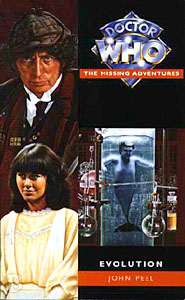

|
Evolution
|
BASIC PLOT DOCTOR COMPANIONS MATERIALISATION CIRCUIT Pg 255 Inside Fulbright Hall. PREPARATORY READING CONTINUITY REFERENCES "She couldn't remember the last time she wore a swimsuit." We can: it was in Death to the Daleks. So see Continuity Cock-Ups. Pg 16 "He claimed at various time to be anything from four hundred to a shade over a thousand years old." Tomb of the Cybermen and The Mind of Evil. Pg 17 "He'd once claimed to be 'immortal, give or take a few years'" The War Games. "Something was clearly bothering him, and it was a something that their recent encounter with the renegade Time Lord Morbius on that nightmarish world of Karn had exacerbated." The Brain of Morbius. Pg 18 "One set had been pastel-shaded Victorian outfits; the other had been all silver and leather. Presumably at least two of the Doctor's previous companions had stayed in here." Victoria and Zoe. Sarah also wore Victoria's outfit in Pyramids of Mars (and on the front cover of this book). Pg 19 "She considered returning to her book again, but she was getting a trifle hungry. That meant a trip to the food machine." The Daleks. Pg 21 "So where in all of time and space would you like to go? Metebelis? Tarbethon Beta? Argolis?" Planet of the Spiders, The Leisure Hive. Although it seems a bit odd for the Doctor to take Sarah back to Metebelis, given what happened last time they went there. Pg 23 "She remembered one of those Victorian dresses in her closet that she'd worn before. It had been the time they'd had the run-in with Sutekh. The Doctor had mentioned that it had belonged to a former companion of his, called Victoria." Pyramids of Mars. Pg 73 "He'd put aside his normal attire for once, and actually looked rather dashing. He wore a chequered cape coat and a deerstalker hat." This is the same outfit the Doctor wears in The Talons of Weng-Chiang (also seen on the cover of the book). Pg 124 "'I'm jolly well coming if she is. I can handle a gun.' 'Probably not as well as Sarah,' the Doctor informed him." Pyramids of Mars. Pg 126 "While she'd faced greater troubles beside the Doctor - not least of which being the all-too-recent hunt for Morbius on the devastated surface of Karn - there was always something indescribably eerie about the unknown on Earth." The Brain of Morbius. "The path led them out onto the moors proper, and it was as bleak and raw a landscape as any that even Karn could have offered." The Brain of Morbius. Pg 130 "She and the Doctor had encountered examples of temporal interference before" The Time Warrior, Invasion of the Dinosaurs. Pg 144 "On her very first trip in the TARDIS, for example, she'd gone back to the Middle Ages." The Time Warrior. "They'd tried to destroy the Daleks at their birth, for example." Genesis of the Daleks. Pg 146 "'Do you have any idea what that is?' 'Morbius's reject heap?' she guessed." The Brain of Morbius. Pg 183 "Doctor John Smith of UNIT? I thought you said..." Spearhead from Space. Pg 209 "You remind me a little of a Brigadier chappie I know." The Web of Fear et al. Pg 210 "As I say, you have the same manner as the Brigadier about you." Well technically he was first the Brigadier in The Invasion. Pg 232 "'The Rutans are a species of amorphous nature that live - ' he gestured vaguely in the air ' - in a galaxy far, far away.'" The Horror of Fang Rock. Pg 233 "Part of their almost eternal war with the Sontarans, Sarah" The Time Warrior et al. Pg 256 "I've a friend called the Brigadier who's a bit like that. He means well, but sometimes jumps the wrong way." Doctor Who and the Silurians. Pgs 258-259 Sarah changes into her swimsuit and grabs a beachball, just as she will do at the end of The Seeds of Doom. Pg 260 "Sir Arthur Conan Doyle ... became the scribe of choice for a private consulting detective who preferred to be referred to as Sherlock Holmes." This semi-historical note explains how Sherlock Holmes was also able to meet the Doctor in All-Consuming Fire (published three months' previously). OLD FRIENDS AND OLD ENEMIES NEW FRIENDS AND NEW ENEMIES Lucy and the merfolk also survive.
CONTINUITY COCK-UPS PLUGGING THE HOLES [Fan-wank theorizing of how to fix continuity cock-ups] FEATURED ALIEN RACES Pg 204 A mermaid. Pg 217 A Rutan in flashback. Pg 232 The hybrid creatures are a consequence of the Rutan healing salve, which is the only real alien substance around. Pg 249 Enhanced attack dogs. FEATURED LOCATIONS Pg 3 A boat. Pg 36 The Hope. IN SUMMARY - Robert Smith? |
|
 |